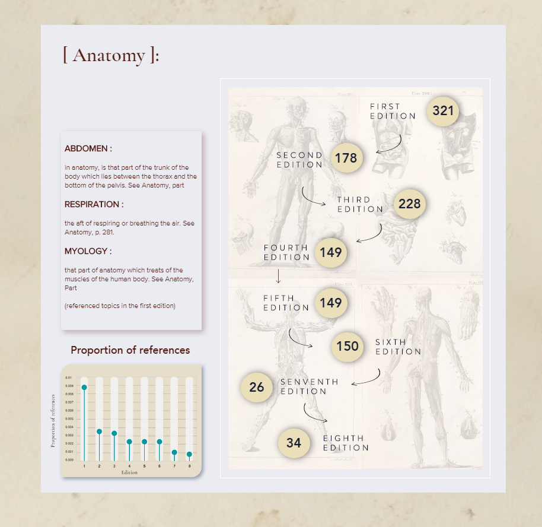
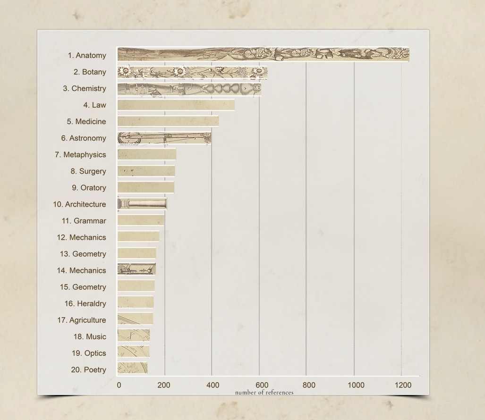
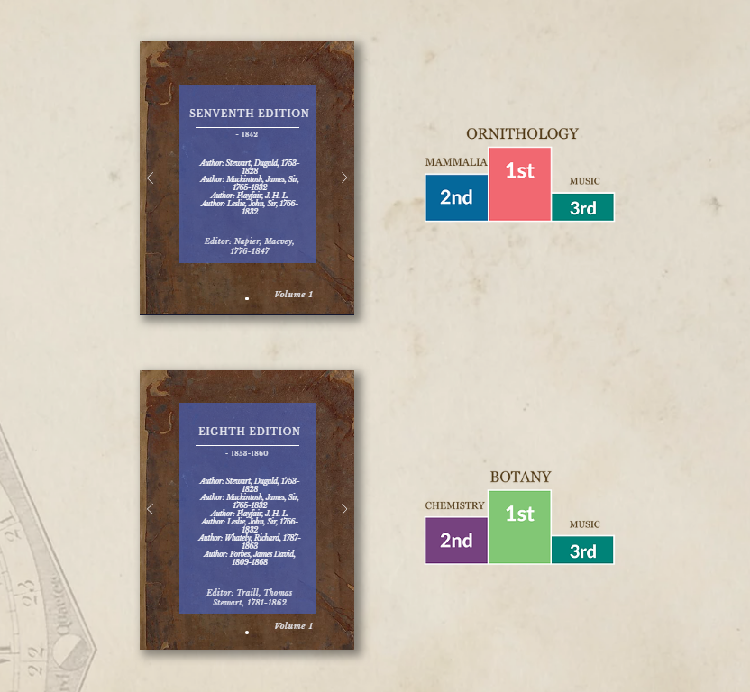

A group project in which we were tasked to design a series of visualisations to communicate insights about a real-world dataset, and present them in an appropriate format. Our dataset was the digitised Encyclopaedia Britannica from the National Library of Scotland, and we developed a website that showcases how the popularity of topics changes throughout editions, as a representation of the evolution of knowledge. We also presented a few summary statistics and interesting words from each edition. Our aim was to provide people with an entry point into this rich and voluminous dataset.
   ← back